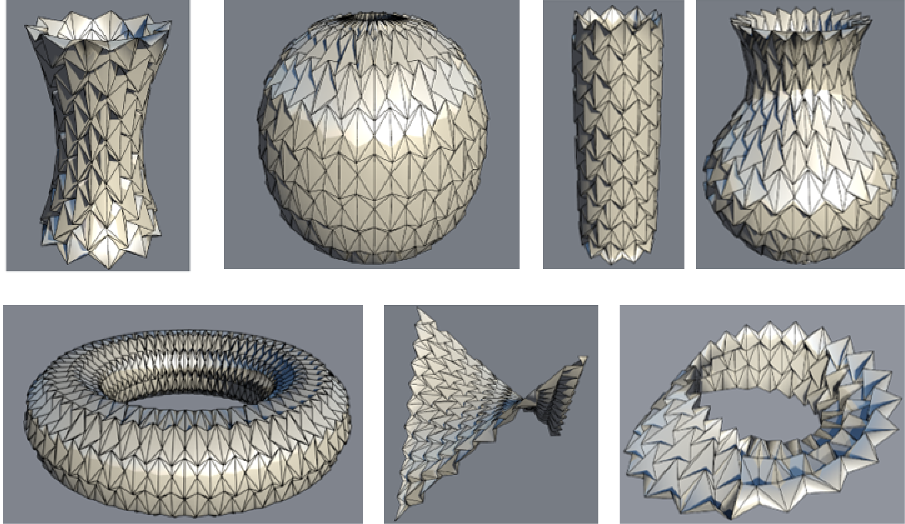

Yan Zhao*, Yuki Endo, Yoshihiro Kanamori, and Jun Mitani
University of Tsukuba

Origami has received much attention in geometry, mathematics, and engineering due to its potential to construct 3D developable shapes from designed crease patterns on a flat sheet. Waterbomb tessellation, which is one type of traditional origami consisting of a set of waterbomb bases, has been used to create geometrically appealing 3D shapes and been widely studied. In this paper, we propose a method for approximating target surfaces, which are parametric surfaces of varying or constant curvatures, using generalized waterbomb tessellations. First, we generate a base mesh by tiling the target surface using waterbomb bases. Then, by applying a simple numerical optimization algorithm to the base mesh, we achieve a developable waterbomb tessellation, which can be developed onto a plane without stretching. We provide a prototype system using which the user can adjust the resolution of the tessellation and modify waterbomb bases. Our work could expand the exploration of building developable 3D structures using origami. Graphica